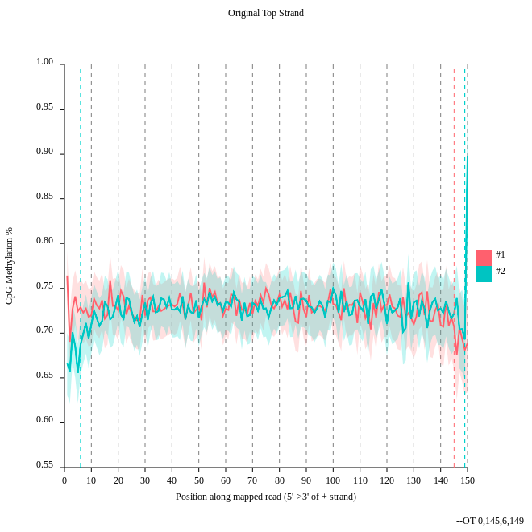

DNA Methylation data analysis
 Joachim Wolff,
Joachim Wolff,  Devon Ryan
Devon Ryan
Overview
question Questionsobjectives Objectives
What is methylation and why it cannot be recognised by a normal NGS procedure?
Can a different methylation influence the expression of a gene? How?
Which tools you can use to analyse methylation data?
requirements Requirements
Learn how to analyse methylation data
Get a first intuition what are common pitfalls.
- Introduction to Galaxy Analyses
- Sequence analysis
- Quality Control: slides slides - tutorial hands-on
- Mapping: slides slides - tutorial hands-on
time Time estimation: 3 hours
Supporting Materials
last_modification Last modification: Jan 6, 2021
Agenda
In this tutorial we will do:
- quality control
- alignment
- methylation extraction
- visualization of methylation levels
- differentially methylated regions analysis
We will use a small subset of the original data. If we would do the computation on the orginal data the computation time for a tutorial is too long. To show you all necessary steps for Methyl-Seq we decided to use a subset of the data set. In a second step we use precomputed data from the study to show you different levels of methylation. We will consider samples from normal breast cells (NB), fibroadenoma (noncancerous breast tumor, BT089), two invasive ductal carcinomas (BT126, BT198) and a breast adenocarcinoma cell line (MCF7).
This tutorial is based off of Lin et al. 2015. The data we use in this tutorial is available at Zenodo.
Load data and quality control
hands_on Hands-on: Get the data and look at the quality
We load now the example dataset which will be used for the tutorial.
Load the two example datasets from our data library: subset_1.fastq.gz and subset_2.fastq.gz.
tip Tip: Get data from the library
- Click on
Shared Data–>Data Librariesand hereMethylSeq_2017- Select the uploaded datasets
subset_1.fastq.gzandsubset_2.fastq.gzas the fastq filesQuality control
tip Tip: Search for tools
- FastQC tool with the following parameters:
- Select the uploaded datasets
subset_1.fastq.gzandsubset_2.fastq.gzas the fastq filesGo to the web page result page and have a closer look at ‘Per base sequence content’
question Questions
- Note the GC distribution and percentage of “T” and “C”. Why is this so weird?
- Is everything as expected?
solution Solution
- The attentive audience of the theory part knows: Every C-meth stays a C and every normal C becomes a T during the bisulfite conversion.
- Yes it is. Always be careful and have the specific characteristics of your data in mind during the interpretation of FastQC results.

Alignment
hands_on Hands-on: Mapping with bwameth
We will map now the imported dataset against a reference genome.
- bwameth tool with the following parameters:
- Select for the option
Select a genome reference from your history or a built-in index?Use a built-in indexand here the humanhg38genome.- Choose for the option
Is this library mate-paired?Paired-endand use the two imported datasets as an input. Compute now the alignment. Please notice that depending on your system this computation can take some time. If you want to skip this, we provide for you a precomputed alignment. Importaligned_subset.bamto your history.question Questions
Why we need other alignment tools for bisulfite sequencing data?
solution Solution
You may have noticed that all the C’s are C-meth’s and a T can be a T or a C. A mapper for methylation data needs to find out what is what.
Methylation bias and metric extraction
hands_on Hands-on: Methylation bias
In this step we will have a look at the distribution of the methylation and will look at a possible bias.
- MethylDackel tool with the following parameters:
- Choose at the first option
Load reference genome fromLocal cacheand forUsing reference genomethe valuehg38.- Select for the option
sorted_alignments.bamthe computed bam file of step 4 of thebwamethalignment.- Use for
What do you want to do?the valueDetermine the position-dependent methylation bias in the dataset, producing diagnostic SVG images.- Set the parameters
By default, if only one read in a pair aligns (a singleton) then it's ignored.andBy default, paired-end alignments with the properly-paired bit unset in the FLAG field are ignored. Note that the definition of concordant and discordant is based on your aligner settings.toYes.
question Questions
- Consider the
original top strandoutput. Is there a methylation bias?- If we would trim, what would be the start and the end positions?
solution Solution
- The distribution of the methylation is more or less equal. Only at the start and the end we could trim a bit but a +- 5% variation is acceptable.
- To trim the reads we would include for the first strand only the positions 0 to 145, for the second 6 to 149.
hands_on Hands-on: Methylation extraction with MethylDackel
We will extract the methylation on the resulting BAM file of the alignment step. We need this to create a methylation level plot in the next step.
- MethylDackel tool with the following parameters:
- Choose at the first option
Load reference genome fromthe value:Local cacheand forUsing reference genomethe value:hg38.- Select for the option
sorted_alignments.bamthe computed bam file of step 4 of thebwamethalignment.- Use for
What do you want to do?the valueExtract methylation metrics from an alignment file in BAM/CRAN format.- Choose
Yesfor the optionMerge per-Cytosine metrics from CpG and CHG contexts into per-CPG or per-CHG metrics.- Set the parameter
Extract fractional methylation (only) at each position. This is mutually exclusive with --counts, --logit, and --methylKittoYes.- All other options use the default value.
Visualization
hands_on Hands-on:
In this step we want to visualize the methylation level around all TSS of our data. When located at gene promoters, DNA methylation is usually a repressive mark.
- Wig/BedGraph-to-bigWig tool with the following parameters:
Use the result of MethylDackel to transform it to a bigWig file.
tip Tip: Database edit
It can happen that you can not select the correct input file. In this case you have to add meta information about the used genome to the file.
- Click on the pencil of the correct history item.
- Change
Database/Build:to the genome you used.- In our case the correct genome is
Human Dec. 2013 (GRCh38/hg38) (hg38).- computeMatrix tool with the following parameters:
- Use the file
CpGIslands.bedasRegions to plotand the in the previous step created bigwig file as thescore file.- Use for the option
computeMatrix has two main output optionsthe valuereference-point.- plotProfile tool with the following parameters:
- Choose for
Matrix file from the computeMatrix toolthe computed matrix from the toolcomputeMatrix.The output should look like this:
Lets see how the methylation looks for a few provided files:
- Galaxy tool: Import the files
NB1_CpG.meth.bedGraphfrom the data library- Wig/BedGraph-to-bigWig tool with the following parameters:
- Use the imported file to transform it to a bigWig file.
question Questions
The execution fails. Do you have an idea why?
solution Solution
A conversion to bigWig would fail right now, probably with some error message like
hashMustFindVal: '1' not found. The reason is the source of the reference genome which was used. There is ensembl and UCSC as sources which differ in naming the chromosomes. Ensembl is using just numbers e.g. 1 for chromosome one. UCSC is using chr1 for the same. Be careful with this especially if you have data from different sources. We need to convert this.comment UCSC - Ensembl convert
- Download the
Replace information filefor hg38 chromosome: Download and import it to Galaxy.- Replace column tool:
- Choose for
File in which you want to replace some valuesthe previous usedNB1_CpG.meth.bedGraphfile and forReplace information fileconversion file. ForWhich column should be replaced?chooseColumn: 1, forSkip this many starting linesa1and forDelimited byTab.- To save compute time we prepared the converted files for you. Import the files:
NB1_CpG.meth_ucsc.bedGraph,NB2_CpG.meth_ucsc.bedGraph,BT089_CpG.meth_ucsc.bedGraph,BT126_CpG.meth_ucsc.bedGraph,BT198_CpG.meth_ucsc.bedGraphandMCF7_CpG.meth_ucsc.bedgraph.- Compute the matrix and plot the profile as described above.
More information about deepTools can be found here: https://deeptools.readthedocs.io


Metilene
hands_on Hands-on: Metilene
With metilene it is possible to detect differentially methylated regions (DMRs) which is a necessary prerequisite for characterizing different epigenetic states.
- Galaxy tool: Import from the data library the files
NB1_CpG.meth.bedGraph,NB2_CpG.meth.bedGraphandBT198_CpG.meth.bedGraph.- Metilene tool:
- Choose for the first option
Input group 1the imported files starting withNBand forInput group 2the imported filesBT198_CpG.meth.bedGraph.- Select for the option
BED file containing regions of interestthe imported BED file CpGIslands.bed.More information about metilene can be found here: https://www.bioinf.uni-leipzig.de/Software/metilene
question Questions
Have a look at the produced pdf document. What is the data showing?
solution Solution
It shows the distribution of DMR differences, DMR length in nucleotides and number CpGs, DMR differences vs. q-values, mean methylation group 1 vs. mean methylation group 2 and DMR length in nucleotides vs. length in CpGs
keypoints Key points
The output of a methylation NGS is having a different distribution of the four bases. This is caused by the bisulfite treatment of the DNA.
If there is a different level of methylation in the loci of a gene this can be a hint that something is wrong.
To get useful results you need – data, data and data!
References
- Lin, I.-H., D.-T. Chen, Y.-F. Chang, Y.-L. Lee, C.-H. Su et al., 2015 Hierarchical Clustering of Breast Cancer Methylomes Revealed Differentially Methylated and Expressed Breast Cancer Genes (O. El-Maarri, Ed.). PLOS ONE 10: e0118453. 10.1371/journal.pone.0118453
Feedback
Did you use this material as an instructor? Feel free to give us feedback on how it went.

Citing this Tutorial
- Joachim Wolff, Devon Ryan, 2021 DNA Methylation data analysis (Galaxy Training Materials). /training-material/topics/epigenetics/tutorials/methylation-seq/tutorial.html Online; accessed TODAY
- Batut et al., 2018 Community-Driven Data Analysis Training for Biology Cell Systems 10.1016/j.cels.2018.05.012
details BibTeX
@misc{epigenetics-methylation-seq, author = "Joachim Wolff and Devon Ryan", title = "DNA Methylation data analysis (Galaxy Training Materials)", year = "2021", month = "01", day = "06" url = "\url{/training-material/topics/epigenetics/tutorials/methylation-seq/tutorial.html}", note = "[Online; accessed TODAY]" } @article{Batut_2018, doi = {10.1016/j.cels.2018.05.012}, url = {https://doi.org/10.1016%2Fj.cels.2018.05.012}, year = 2018, month = {jun}, publisher = {Elsevier {BV}}, volume = {6}, number = {6}, pages = {752--758.e1}, author = {B{\'{e}}r{\'{e}}nice Batut and Saskia Hiltemann and Andrea Bagnacani and Dannon Baker and Vivek Bhardwaj and Clemens Blank and Anthony Bretaudeau and Loraine Brillet-Gu{\'{e}}guen and Martin {\v{C}}ech and John Chilton and Dave Clements and Olivia Doppelt-Azeroual and Anika Erxleben and Mallory Ann Freeberg and Simon Gladman and Youri Hoogstrate and Hans-Rudolf Hotz and Torsten Houwaart and Pratik Jagtap and Delphine Larivi{\`{e}}re and Gildas Le Corguill{\'{e}} and Thomas Manke and Fabien Mareuil and Fidel Ram{\'{\i}}rez and Devon Ryan and Florian Christoph Sigloch and Nicola Soranzo and Joachim Wolff and Pavankumar Videm and Markus Wolfien and Aisanjiang Wubuli and Dilmurat Yusuf and James Taylor and Rolf Backofen and Anton Nekrutenko and Björn Grüning}, title = {Community-Driven Data Analysis Training for Biology}, journal = {Cell Systems} }